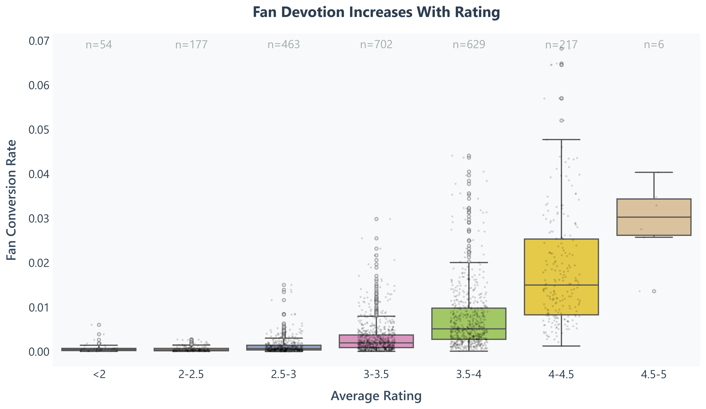
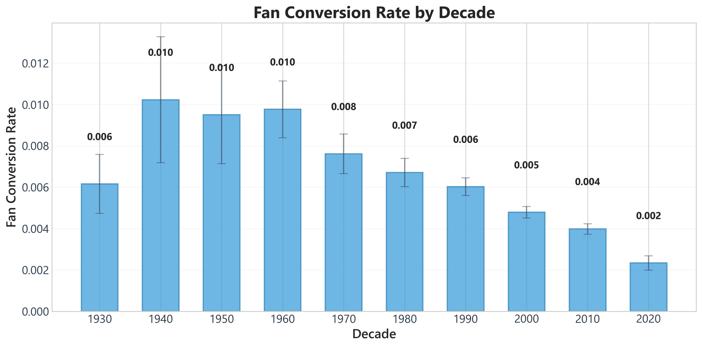
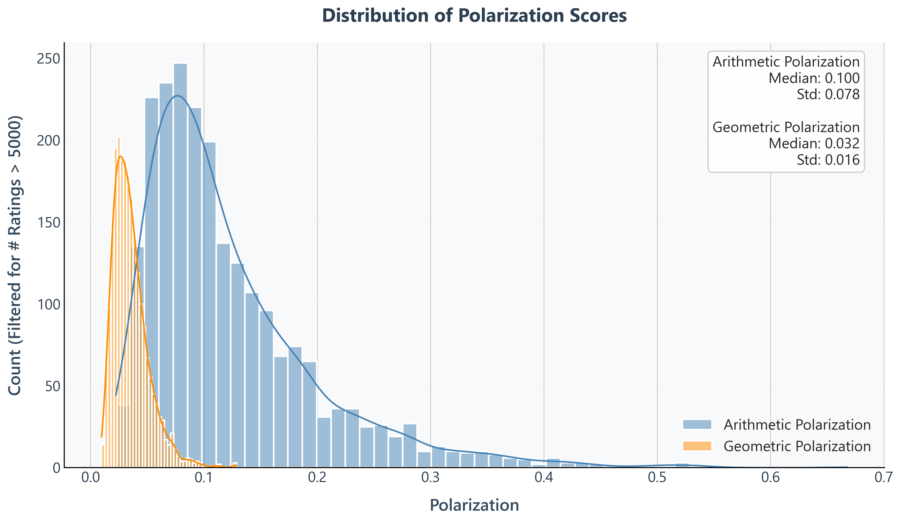
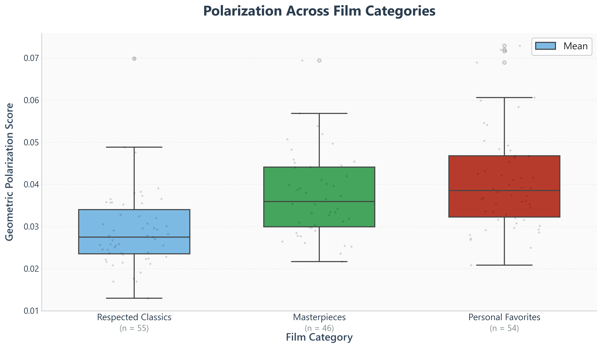
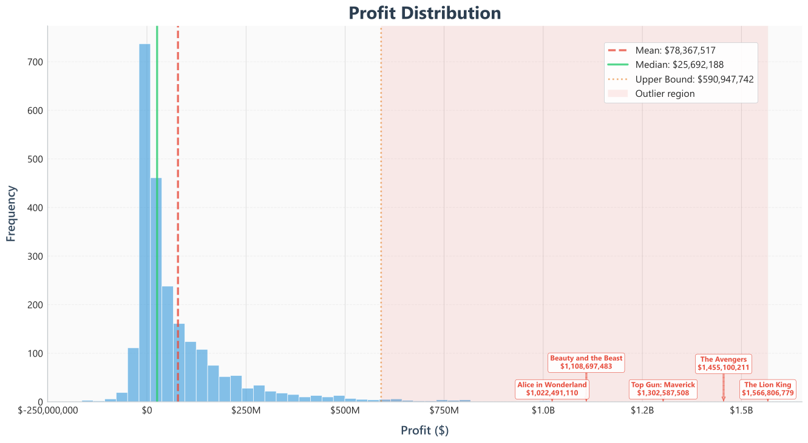
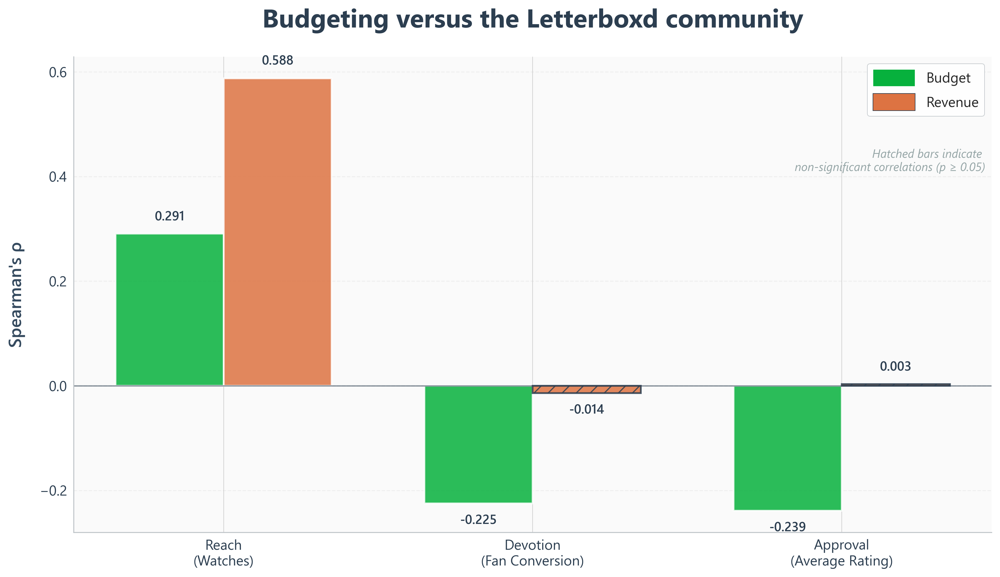
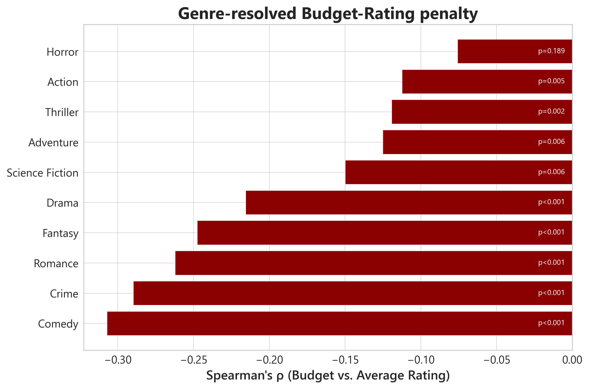
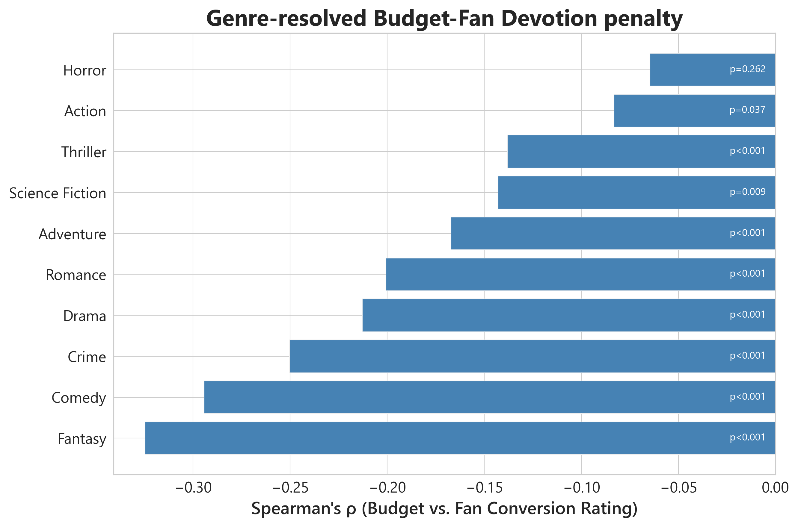

Money buys reach, not belonging: box-office revenue shows no relationship with how Letterboxd's cinephile community rates or loves a film.
Is this a cool project?
Letterboxd offers something unusual: a "cinephilic hive buzzing with authentic enthusiasm and heterogeneous tastes", to quote the New York Times. In a platform of passionate film enthusiasts, independent from box-office pressures, weekly column demands from editors, and film-critic quality reviews, what do ratings reflect? Does box-office budget still buy audience devotion, or does Letterboxd's self-selected audience actively decouple from it?
This is tale of the tension between art and industry, told through five insights.
Datasets
> Letterboxd Classification Dataset — ratings, director, and cast data (Kaggle)
> IMDB Dataset with Budget and Revenue — budget and box office revenue data (Kaggle)
Data cleaning notes and merging methodology are described in detail in the
README ↗. The final
dataset is comprised from 2,369 films, spanning 110 years, and with an average of 93,720 ratings per film.
A note on methodology:
Spearman's rank correlation (ρ) measures the strength and direction of a monotonic
relationship between two variables: from -1 (perfectly decreasing) to +1 (perfectly increasing). The monotonic
relation need not be linear and the test operates on the ranks of the data rather than the raw values.
The p-value that accompanies a test and a Spearman correlation answers the narrower question:
if there were truly no effect in the underlying population, how likely would data this
extreme be, purely by chance?. A small p-value (conventionally < 0.05) means the observed pattern is
unlikely to be due to random sampling noise alone
Kruskal-Wallis test is used when comparing a numeric variable (e.g. polarization) across
three or more independent groups, without assuming the variable is normally distributed within each group.
The test tells us whether at least one group differs from the others, without identifying which.
Dunn's post-hoc test follows, after a significant Kruskal-Wallis result is obtained, to test
each pair of groups individually while correcting for the increased risk of false positives that comes from
running multiple comparisons at once.
The Insights
Insight 1: How to quantify quality? What's a good metric to use?
The uniqueness of our dataset compels us to think about a unique metric. In Letterboxd, you can do three things when logging a film,
Watch - simply log the film, optionally with a rating. Like - give it a heart. Fan - add it to your all-time Top Four.
The fan conversion rate is defined as the ratio of the number of Fans to the total Watches.
It correlates strongly with Letterboxd's own crowd-rating, suggesting it captures a related but distinct dimension:
the depth of personal attachment rather than just approval — rather than being random noise.

Within the films with more than 10000 watches, fan devotion increases monotonically with rating. Notice however the growing number of outliers, indicating that the interesting exceptions only really exist among already-well-rated films. The Spearman coefficient is 0.761 with p-value of 0.
The result of Fig. 1 is not surprising, yet it shows that rating raises the ceiling of possible devotion, but doesn't guarantee it. In addition, the highest rating films are not necessarily the ones with higher fan devotion. Within the Top 20/50/100/200, the overlap of the highest average rating and the highest fan conversion rate is consistently close to 50%. Therefore, the two metrics are meaningfully related yet distinct. The remaining that do not overlap, represent two categories: those critically respected films that doesn't lead to an outsized personal devotion, and those personally loved films whose ratings are not as high as the highest rated films.
In addition, fan conversion rates tend to peak to the earlier decades suggesting that a film becomes a cult classic in time, despite the fact that
Watches would skew towards the latest decades, and even despite the possible contemporary positive reception of the film.

Cult classics, the films with the higher numbers of fans per watch, tend to be concentrated in the 60-70s era of film production.
What about the extreme ends of the rating list? How do we measure polarization and whether its influence to fan devotion? The dataset includes the number of "★"
and "★★★★★" ratings of each film. An arithmetic mean of the percentages of lowest and highest rated films is not an indication of polarizability, but rather
it is a measure of the extremeness of the consensus. Divisive films are more accurately captured by a geometric mean of the two percentages. Within the most
polarized movies in each way (arithmetic vs geometric), the overlap is 0 for the top 50 and 7 for the top 100. The metric reflects also the fact that genuine polarization is rare (notice the short tail in the plot below).

Within the films with more than 5000 ratings, quantifying polarization through the geometric mean of the number of lowest (★) and the number of highest
(★★★★★) ratings is more suitable.
Insight 2: The relationship between critical acclaim, fan devotion and polarization
There are films which are not universally acclaimed, yet they have a non-ignorable base of fans that intensely loves them, and there are films which are critically respected, looking at their ratigns, yet they are not universally passionately loved. In the first case, the average rating is dragged down while in the first case it's dragged up.
We define three subsets that we want to investigate, within the films with more than 10,000 watches:
Personal favorites - Films in the Top 100 by fan conversion, but not Top 100 by rating Globally respected - Films in the Top 100 by rating, but not Top 100 by fan conversion Masterpieces - The overlap of the two: Film in Top 100 of both rating and fan conversion
Personal favorites have relatively lower ratings but are beloved by a subset of the Letterboxd community while the globally respected have higher ratings but do not have an obsessed community. Does polarization differ across the three film categories?
For each group, we look at the geometric-mean polarization score to test whether a film that earns devotion without topping the rating charts is more likely to be genuinely polarizing, and whether a film with a higher rating is more likely to be uniformly well-liked without being polarizing. For a community-driven platform like Letterboxd, this captures a tension between what the community agrees is great and what the individual personally loves.
A statistical Kruskal-Wallis showed a significant overall difference between the three groups (H = 38.60, p < 0.0001), indicating that at least one group differs in polarization.
The findings suggest that personal fan devotion, rather than collective critical agreement, is the primary driver of polarization. Post-hoc comparisons showed that films earning high fan devotion (whether or not they also reach the highest average ratings) show significantly higher polarization than the films valued mainly for global respect (p < 0.0001 for both comparisons that involve the globally respected group). Notably, the personal favourites and the masterpieces did not differ significantly from each other (p=0.61), which suggests that once a film achieves strong personal attachment, reaching the very highest average ratings on top of that does not meaningfully reduce its polarization. On the contrary, it is is the absence of a devoted fanbase - being respected globally but not personally cherished - that is associate with more consensus and less polarization.

The Kruskal-Wallis coefficient is H = 38.600 with p=0. Among the three categories, the personal favorites have a median polarization of 0.0412.
In fact, the result is a direct empirical confirmation of the New York Times characterization from above, identifying the heterogeneous taste that comes about in a platform like Letterboxd. Individual passion doesn't average out into homogeneity, and homogeneity implies broader consensus.
Insight 3: Is making films profitable?
Let's first have a look at the absolute profit -- Revenue - Budget -- distribution across the dataset. The distribution has a long tail because of the blockbusters which drive the mean to a substantially higher value. Besides the profit, looking at the ROI of the film, we interestingly observe that the top 10% most profitable films (by ROI) are rated on average slightly higher than the overall median (3.65 versus 3.30). On the other hand, the top 10% highest rated films have on average double the ROI of the platform median (451% versus 233%).

The distribution of profits across the dataset. The median is a better estimate of the average profit, given the long tail of the distribution. Some overperformer films, in terms of profit, are identified as outliers.
Insight 4: Money buys reach but not belonging
We just established a relation between fan devotion and polarization that hints perhaps on the specificity of the community-driven signals being different than a critical positive consensus. Now we test how do the financial dimensions of a film -- what it cost to make (Budget) and what it earned (Revenue) -- are able to influence this system, or whether the Letterboxd community is largely independent of commercial outcome.
A computation of Spearman correlations across the whole dataset reveals an asymmetry between what money achieves and what it doesn't. Budget and Revenue are both, unsurprisingly, positively associated with a film's reach -- its total number of watches -- possibly reflecting wider releases and greater marketing spend rather than any judgment of quality. However, beyond the reach, the two commercial metrics diverge: Budget shows a weak but statistically significant negative correlation with both fan conversion rate (ρ=-0.23) and average rating (ρ=-0.24), while Revenue shows essentially no relationship with either (ρ≈0.00 and ρ=-0.01, both non-significant).
In other words, box-office success predicts how many people watch a film, but not whether they rate it highly or come to love it. Budget shows a similar (yet weaker) positive relationship with reach, but unlike Revenue, it also carries a small negative association with both rating and devotion. Production spend doesn't translate into deeper audience appreciation.

Budget correlates positively with reach but negatively with fan devotion and approval, while Revenue shows the opposite pattern.
Insight 5: Horror stands as an outlier
We now look at whether any of the genres sits as an outlier to the rest, or whether or not the conclusions we drew so far are more or less homogeneous across all of them. 9 of 10 genres show a statistically robust negative Budget-Rating relationship (p < 0.01) and negative Budget-Fan Devotion (fan conversion rate) relationship (p < 0.05), indicating a genuinely homogeneous pattern.
Horror stands out as the sole exception: with low correlation and not too high statistical significance, the result suggests that within Horror, budget size has no detectable relationship with how the film is rated or become loved, unlike every other major genre in the dataset. For example, the higher budgeted "World War Z" and "Prometheus" achieve the same ratings as the lower-budget (<$1M) with "Speak No Evil" (2022) and "Hush".

Figure 2a. Budget vs. Rating by genre

Figure 2b. Budget vs. Fan devotion by genre
Takeaways and Limitations
Combining Letterboxd audience data with independently-sourced budget and revenue figures, we tested what makes a film universally admired, a cult classic or a commercial success. The results are interesting because the data is drawn from a self-identifying cinephile community.
Several limitations are worth being explicit about:
Data is a sample. This dataset reflects films that happened to survive multiple
inner-join merges across three independent sources, each with its own coverage gaps (financial data being
sparser for older, foreign, and independent films). The results describe patterns within this specific,
non-random sample.
Letterboxd users are not a general audience. Given the platform hosting many engaged and self-selected cinephiles, the findings here may not generalize to how a broader, more representative moviegoing public relates budget to enjoyment.
Genre mixing Most films are multi-genre and we selected a "primary genre" semi-randomly. Mixing of genres might be the driver of the correlations that we found. This claim cannot be verified.
Correlation, not causation. The correlations reported are real and consistent, but our analysis misses genre mixing, marketing strategies, theatrical distributions, language, and other causes that we didn't account for.
Custom metrics are interpretable, not definitive.Fan conversion rate and geometric-mean polarization score were validated against existing signals